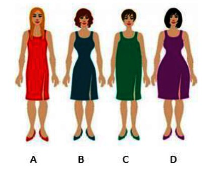
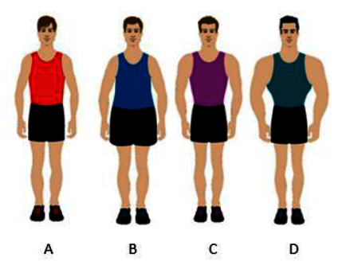

Vprašalnik
Pri sociologiji pripravljamo seminarsko nalogo o odnosu mladostnikov do telesnega videza. Vljudno te prosimo, da izpolniš ta vprašalnik. Prosimo te tudi, da ob vsakem vprašanju premisliš in iskreno odgovoriš. Vprašalnik je anonimen. Zahvaljujemo se ti za sodelovanje. Dijaki 2. e
Spol (obkroži): M Ž
Starost: ______________________
Navodilo: Pri vsaki trditvi obkroži številko, ki najbolj velja zate. Pri vsaki trditvi lahko obkrožiš zgolj eno številko.
|
Se povsem strinjam. |
Se strinjam. |
Ne morem se odločiti. |
Se ne strinjam. |
Se sploh ne strinjam. |
| 1) S svojim videzom sem zadovoljen/a. |
5 |
4 |
3 |
2 |
1 |
| 2) Zdravje je zame pomembnejše kot videz. |
5 |
4 |
3 |
2 |
1 |
| 3) Glede svojega videza čutim pritisk medijev. |
5 |
4 |
3 |
2 |
1 |
| 4) Glede svojega videza čutim pritisk družine. |
5 |
4 |
3 |
2 |
1 |
| 5) Glede svojega videza čutim pritisk vrstnikov. |
5 |
4 |
3 |
2 |
1 |
Navodilo: Obkroži črke pred tistimi odgovori, ki veljajo zate. Izbereš lahko več odgovorov. Če zate ne velja nič od naštetega, ne obkroži nobenega odgovora.
6) Za lepši videz
- sem se odločil/a za dieto.
- sem se odločil/a za lepotno operacijo.
- sem se odločil/a za prehranske dodatke in druge pripravke (npr. odvajala).
- sem se odločil/a za telesno aktivnost.
- sem se omejeval/a pri hrani, izpustil/a kakšen obrok.
- sem stradal/a.
- sem se odločil/a za drugo (napiši, za kaj): ___________________ .
7) Za lepši videz
- bi se odločil/a za dieto.
- bi se odločil/a za lepotno operacijo.
- bi se odločil/a za prehranske dodatke in druge pripravke (npr. odvajala).
- bi se odločil/a za telesno aktivnost.
- bi bil/a pripravljen/a omejevati se pri hrani, izpustiti kakšen obrok.
- bi bil/a pripravljen/a stradati.
- bi se odločil/a za drugo (napiši, za kaj): ___________________ .
Navodilo: Obkroži odgovor, ki velja zate.
8) Ali si kdaj imel/a motnje hranjenja?
- Ne.
- Da.
9) Ali poznaš koga, ki je imel oz. ima težave z motnjami hranjenja?
- Ne.
- Poznam eno ali dve taki osebi.
- Poznam tri ali več takih oseb.
Navodilo: Oglejte si slike. Če ste dekle, izpolnite 10. nalogo, če ste fant, pa izpolnite 11. nalogo.
10)

- Kako vidiš svoje telo (izpiši ustrezno črko)? ______________
- Kakšna bi rada bili (izpiši ustrezno črko)? ______________
11)

- Kako vidiš svoje telo (izpiši ustrezno črko)? ______________
- Kakšen bi rad bil (izpiši ustrezno črko)? ______________